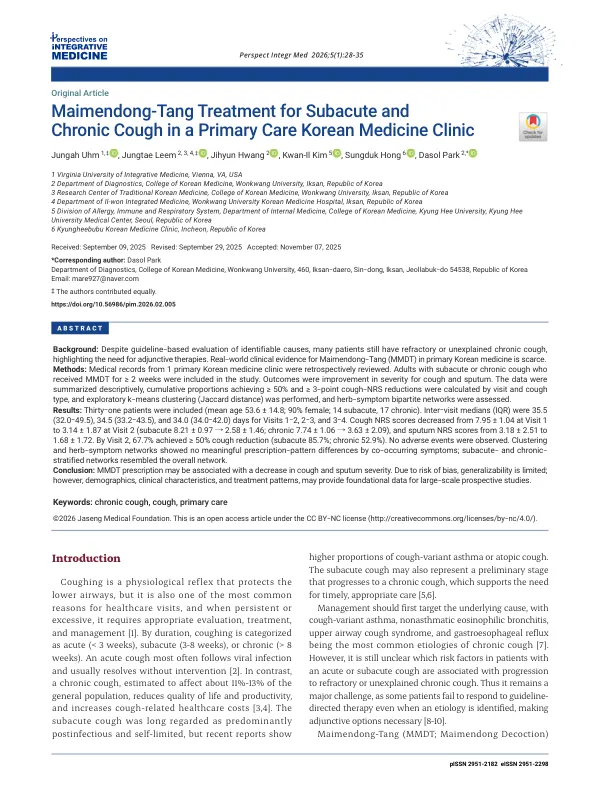

Maimendong-Tang Treatment for Subacute and Chronic Cough in a Primary Care Korean Medicine Clinic
Uhm J, Leem J, Hwang J, Kim KI, Hong S, Park D
Perspectives on Integrative Medicine 5(1):28-35

첫 장 · 오픈액세스First page · open access
논문 소개Summary
기침은 병원을 찾는 가장 흔한 이유 가운데 하나입니다. 만성 기침은 인구의 11%에서 13%가 겪고 삶의 질과 생산성을 떨어뜨립니다. 지침에 따라 원인을 찾아 치료해도 낫지 않거나 원인을 알 수 없는 기침이 남습니다. 맥문동탕은 이 자리에 쓰여 왔지만 한의원 진료 현장의 실사용 자료는 드물었습니다.
한 한의원의 진료기록을 후향적으로 검토했습니다. 아급성 또는 만성 기침으로 맥문동탕을 2주 이상 복용한 성인 31명이 대상이고 평균 53.6세, 90%가 여성이었으며 아급성 14명, 만성 17명이었습니다. 기침과 가래의 중증도 변화를 보고, 방문 시점과 기침 유형별로 50% 이상 및 3점 이상 감소한 누적 비율을 계산했으며, k평균 군집분석과 약재·증상 이분 네트워크도 탐색적으로 살폈습니다.
기침 숫자평가척도는 1차 방문 7.95에서 2차 방문 3.14로 낮아졌고 아급성은 8.21에서 2.58로, 만성은 7.74에서 3.63으로 움직였습니다. 가래는 3.18에서 1.68로 낮아졌습니다. 2차 방문까지 기침이 50% 이상 줄어든 비율은 전체 67.7%였고 아급성 85.7%, 만성 52.9%였습니다. 이상반응은 없었습니다.
음성으로 나온 것도 있습니다. 군집분석과 약재·증상 네트워크에서는 동반 증상에 따른 처방 양상의 의미 있는 차이가 나타나지 않았고, 아급성과 만성으로 나눈 네트워크도 전체 네트워크와 비슷했습니다. 증상에 따라 처방을 달리한다는 통념이 이 자료에서는 드러나지 않은 것입니다.
한계는 무겁습니다. 대조군이 없는 후향 연구이고 표본이 31명입니다. 일차 진료 환경이라 진단의 정확도가 떨어질 수 있어 추정 진단에 의존했고 자료의 완결성과 일관성에도 한계가 있습니다. 기침과 가래의 중증도를 환자가 매기는 숫자척도로만 재고 검증된 도구를 쓰지 않았습니다. 저자들은 이 자료를 결론이 아니라 대규모 전향연구를 설계하기 위한 바탕으로 규정했습니다.
Cough is among the commonest reasons for seeking care. Chronic cough affects an estimated 11% to 13% of the population and reduces quality of life and productivity. Even after guideline-based evaluation and treatment of identifiable causes, refractory or unexplained cough remains. Maimendong-tang has been used in this place, but real-world data from Korean medicine primary care were scarce.
Records from one Korean medicine clinic were reviewed retrospectively. Thirty-one adults with subacute or chronic cough who had taken the formula for two weeks or more were included — mean age 53.6 years, 90% women, 14 subacute and 17 chronic. Changes in cough and sputum severity were examined, cumulative proportions achieving reductions of 50% or more and of three points or more were calculated by visit and cough type, and k-means clustering and herb-symptom bipartite networks were explored.
Cough scores on the numeric rating scale fell from 7.95 at the first visit to 3.14 at the second — from 8.21 to 2.58 in subacute cough and from 7.74 to 3.63 in chronic. Sputum scores fell from 3.18 to 1.68. By the second visit, 67.7% overall had achieved a reduction of 50% or more, 85.7% of subacute and 52.9% of chronic cases. No adverse events occurred.
Some findings were negative. Clustering and the herb-symptom networks showed no meaningful differences in prescription pattern according to co-occurring symptoms, and networks stratified by subacute and chronic cough resembled the overall network. The common assumption that prescriptions vary with accompanying symptoms did not surface in these data.
The limitations are weighty. This is a retrospective study without a control group, in 31 patients. Diagnostic accuracy may be suboptimal in a primary care setting, so presumptive diagnoses were relied upon, and data completeness and consistency are limited. Cough and sputum severity were measured only by patient-reported numeric scales, without validated instruments. The authors define these data not as a conclusion but as groundwork for designing large prospective studies.
인용Cite
Uhm J, Leem J, Hwang J, Kim KI, Hong S, Park D. Maimendong-Tang Treatment for Subacute and Chronic Cough in a Primary Care Korean Medicine Clinic. Perspectives on Integrative Medicine. 2026;5(1):28-35. doi:10.56986/pim.2026.02.005